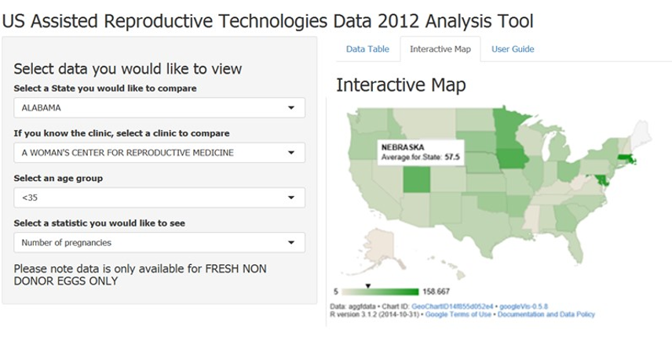

Extract from the raw data provided by CDC:
## state_list FshNDCansRate2
## [1,] "ALABAMA" "2 / 12"
## [2,] "ALABAMA" "18.2"
## [3,] "ALABAMA" "2 / 14"
## [4,] "ALASKA" "1/15"
## [5,] "ALASKA" "16.1"
## [6,] "ALASKA" "0 /3"
Data after manipulation in R, shows new column with calculations made to it:
## state_list FshNDCansRate2 calc
## [1,] "ALABAMA" "2/12" "0.17"
## [2,] "ALABAMA" "18.2" "18.2"
## [3,] "ALABAMA" "2/14" "0.14"
## [4,] "ALASKA" "1/15" "0.07"
## [5,] "ALASKA" "16.1" "16.1"
## [6,] "ALASKA" "0/3" "0"
ARTApp - Supporting infertility patient's choice